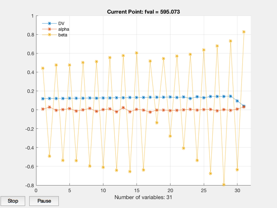
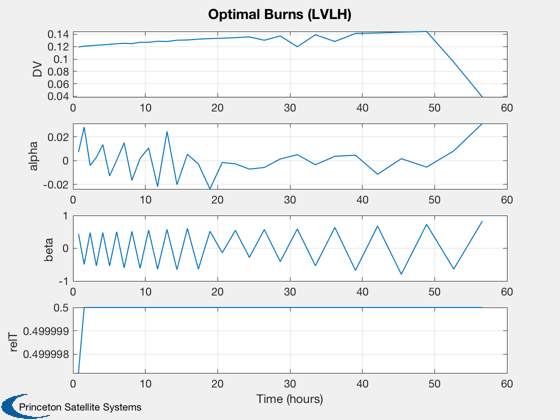
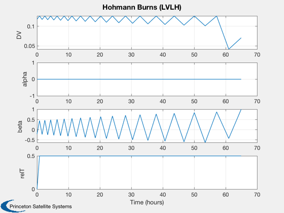

Contents
Compare a mass optimization to a iterative Hohmann transfer, linear model.
Circular to circular transfer with plane change.
See also: OptimizeImpulsiveLVLH, OptimizeMassImpulsiveLVLH, MassCostLinearFun, IterativeHohmannInc, BurnTimesImpulsive, LTPlaneChange
%-------------------------------------------------------------------------- % Copyright (c) 2019 Princeton Satellite Systems, Inc. % All rights reserved. %--------------------------------------------------------------------------
Parameters
Re = 6384;
r0 = Re + 300;
r1 = Re + 14000;
i0 = 20*pi/180;
elInitial = [r0 i0 0 0 0 0];
elFinal = [r1 0 0 0 0 0];
burns0 = OptimizeImpulsiveLVLH(elInitial,elFinal);
name = 'LEO to MEO';
dI = elFinal(2)-elInitial(2);
Optimize
This may take a few minutes.
lvlhFrame = OTFrame('lvlh'); % Propulsion system info; set iSp, m0, and sigma here propData = MassCostLinearFun; propData.m0 = 1000; propData.iSp = 2000; propData.sigma = 300; % impulse/kg StructToText(propData) data = OptimizeMassImpulsiveLVLH; data.costFun = @MassCostLinearFun; data.dvFun = @MaxDVLinear; data.costData = propData; data.costData.useFuel = false; data.nBurnPairs = 1; data.laps = 15; data.display = 'iter'; data.elementMask = [0 1 0 0 0 0 1 1]; data.ConTol = 1e-6; % 1e-6 data.stepTol = 1e-10; % 1e-10 disp('Optimizing...') tic [burnsOpt,elOutput,out] = OptimizeMassImpulsiveLVLH(elInitial,elFinal,burns0,data); toc disp('...finished') OptimizerReport( out ) [sysMass,masses] = MassCostLinearFun(burnsOpt,elInitial,propData,lvlhFrame);
m0:
1000
iSp:
2000
eta:
0.5
fTank:
0.08
sigma:
300
impulseMax:
500
useFuel:
0
Optimizing...
Initial Guess
Columns 1 through 3
6684 0.349065850398866 0
18319.4842963721 0.0739180153999651 0.000310499926168798
20384 0 0
Columns 4 through 6
0 0 0
3.14111163687449 0.0303228677462462 2.27605994838331e-05
0 0 0
First-order Norm of
Iter F-count f(x) Feasibility optimality step
0 94 5.251646e+02 2.620e+01 2.254e+02
1 194 6.787570e+02 4.953e+00 3.508e+02 1.263e+00
2 289 7.959687e+02 2.665e+00 2.718e+03 4.302e-01
3 386 7.759348e+02 2.663e+00 2.720e+03 2.454e-01
4 482 7.384911e+02 3.739e+00 2.623e+03 2.291e-01
5 585 7.216043e+02 2.195e+00 4.164e+02 5.951e-02
6 680 7.177174e+02 2.186e+00 3.962e+02 2.165e-02
7 776 7.144826e+02 2.192e+00 2.666e+03 4.737e-02
8 873 7.101238e+02 2.167e+00 2.905e+03 5.744e-02
9 971 7.118511e+02 1.731e+00 3.505e+02 7.214e-02
10 1066 6.999358e+02 1.894e+00 2.827e+03 8.530e-02
11 1165 7.152422e+02 1.211e-01 3.364e+02 1.435e-01
12 1266 6.991129e+02 1.719e-01 2.673e+02 4.060e-02
13 1361 6.960603e+02 1.707e-01 3.026e+02 2.590e-02
14 1459 7.017080e+02 5.980e-02 2.546e+02 7.122e-02
15 1566 7.010959e+02 7.157e-02 3.481e+02 3.112e-03
16 1661 7.008415e+02 7.378e-02 2.595e+02 1.415e-03
17 1759 6.990372e+02 8.051e-02 2.747e+02 8.444e-03
18 1854 6.988588e+02 8.138e-02 2.196e+02 2.448e-03
19 1952 6.907667e+02 4.998e-02 3.462e+02 4.961e-03
20 2047 6.881966e+02 7.669e-02 5.000e+02 6.597e-03
21 2145 6.861717e+02 3.150e-03 2.136e+02 1.800e-02
22 2251 6.838783e+02 4.049e-02 3.042e+02 2.525e-03
23 2346 6.837696e+02 4.077e-02 3.015e+02 1.131e-03
24 2444 6.834315e+02 2.168e-04 1.686e+02 2.261e-03
25 2548 6.822762e+02 1.192e-02 2.565e+02 1.051e-03
26 2643 6.821882e+02 1.289e-02 2.230e+02 9.102e-04
27 2741 6.824440e+02 2.619e-03 2.878e+02 1.900e-03
28 2839 6.785323e+02 3.055e-02 2.931e+02 2.704e-03
29 2934 6.780823e+02 3.797e-02 2.124e+02 4.127e-03
30 3041 6.775747e+02 4.500e-02 2.879e+02 5.600e-04
First-order Norm of
Iter F-count f(x) Feasibility optimality step
31 3136 6.775470e+02 4.500e-02 2.872e+02 2.213e-04
32 3233 6.769962e+02 5.868e-02 3.073e+03 4.794e-02
33 3338 6.745697e+02 1.394e-02 2.374e+02 4.166e-03
34 3433 6.740289e+02 1.414e-02 2.536e+02 5.919e-03
35 3533 6.727731e+02 5.049e-03 2.501e+02 5.952e-03
36 3628 6.722469e+02 6.582e-03 2.389e+02 4.838e-03
37 3726 6.670889e+02 1.452e-03 2.400e+02 1.201e-02
38 3822 6.660129e+02 2.966e-03 2.226e+02 1.055e-02
39 3927 6.655122e+02 5.772e-03 2.148e+02 2.569e-03
40 4022 6.653805e+02 5.835e-03 1.728e+02 1.760e-03
41 4120 6.603412e+02 3.119e-02 2.977e+02 4.928e-03
42 4217 6.590019e+02 3.119e-02 2.732e+03 4.015e-03
43 4315 6.514825e+02 1.352e-02 1.923e+02 1.443e-02
44 4411 6.506426e+02 1.492e-02 3.138e+03 1.101e-02
45 4514 6.495315e+02 1.675e-02 2.042e+02 4.107e-03
46 4609 6.493052e+02 1.672e-02 1.999e+02 2.267e-03
47 4708 6.479742e+02 3.855e-02 2.809e+02 4.285e-03
48 4805 6.478540e+02 3.854e-02 2.806e+02 5.897e-04
49 4903 6.480235e+02 1.483e-02 1.992e+02 4.010e-03
50 4998 6.477963e+02 1.481e-02 1.934e+02 2.144e-03
51 5098 6.470006e+02 7.251e-04 2.794e+02 3.304e-03
52 5193 6.464462e+02 8.260e-04 2.701e+02 2.844e-03
53 5292 6.455595e+02 8.478e-03 1.990e+02 4.152e-03
54 5387 6.453402e+02 8.496e-03 1.762e+02 2.248e-03
55 5491 6.445468e+02 1.241e-02 2.210e+02 2.544e-03
56 5586 6.444369e+02 1.241e-02 2.227e+02 1.155e-03
57 5686 6.436888e+02 2.131e-02 2.522e+02 2.625e-03
58 5781 6.433131e+02 2.135e-02 2.298e+02 1.923e-03
59 5879 6.434099e+02 1.281e-02 2.767e+02 5.083e-03
60 5974 6.428812e+02 1.290e-02 2.673e+02 3.288e-03
First-order Norm of
Iter F-count f(x) Feasibility optimality step
61 6073 6.433214e+02 1.328e-03 2.025e+02 4.921e-03
62 6168 6.431023e+02 1.350e-03 2.125e+02 2.463e-03
63 6266 6.399651e+02 2.585e-02 2.137e+02 5.761e-03
64 6361 6.395079e+02 2.579e-02 2.198e+02 5.158e-03
65 6459 6.389804e+02 1.048e-02 2.397e+02 2.214e-02
66 6560 6.371430e+02 2.977e-02 2.047e+02 1.007e-02
67 6655 6.368957e+02 2.976e-02 2.052e+02 2.377e-03
68 6753 6.368613e+02 5.484e-04 2.940e+02 6.799e-03
69 6848 6.355886e+02 5.593e-03 3.070e+02 1.043e-02
70 6946 6.333191e+02 2.412e-02 2.013e+02 1.515e-02
71 7041 6.324286e+02 2.373e-02 2.018e+02 9.676e-03
72 7139 6.322196e+02 1.921e-02 1.942e+02 3.509e-02
73 7235 6.309227e+02 2.042e-02 2.392e+02 1.162e-02
74 7334 6.286693e+02 1.579e-03 2.564e+02 1.222e-02
75 7429 6.272639e+02 3.399e-03 3.122e+03 1.304e-02
76 7527 6.250829e+02 2.127e-03 2.082e+02 2.210e-02
77 7627 6.245290e+02 6.582e-03 1.379e+02 8.148e-03
78 7724 6.243766e+02 6.591e-03 1.188e+02 1.584e-03
79 7824 6.239822e+02 6.592e-03 2.068e+02 2.436e-03
80 7922 6.237255e+02 7.209e-03 1.349e+02 1.617e-03
81 8018 6.236501e+02 7.226e-03 3.259e+03 1.422e-03
82 8116 6.218408e+02 9.060e-03 2.121e+02 1.476e-03
83 8217 6.213242e+02 5.019e-03 1.319e+02 1.629e-03
84 8321 6.212141e+02 5.447e-03 2.810e+02 5.449e-04
85 8416 6.211068e+02 5.449e-03 2.888e+02 3.064e-04
86 8516 6.211283e+02 2.551e-03 1.487e+02 4.181e-04
87 8611 6.211040e+02 2.596e-03 1.204e+02 3.682e-04
88 8709 6.207626e+02 4.411e-03 2.025e+02 4.104e-04
89 8804 6.206387e+02 4.452e-03 2.045e+02 1.851e-03
90 8906 6.205101e+02 4.763e-03 1.328e+02 5.690e-04
First-order Norm of
Iter F-count f(x) Feasibility optimality step
91 9001 6.204633e+02 4.779e-03 1.540e+02 7.080e-04
92 9101 6.203455e+02 6.406e-03 2.839e+02 4.335e-04
93 9196 6.202736e+02 6.406e-03 2.633e+02 6.963e-04
94 9294 6.199301e+02 4.094e-03 1.489e+02 8.222e-04
95 9389 6.197523e+02 4.454e-03 3.287e+03 3.337e-03
96 9487 6.197386e+02 6.994e-04 2.326e+02 3.374e-03
97 9582 6.195250e+02 2.135e-03 1.884e+02 3.518e-03
98 9684 6.192638e+02 5.871e-03 2.014e+02 2.090e-03
99 9779 6.192111e+02 5.870e-03 2.049e+02 6.950e-04
100 9877 6.187062e+02 5.274e-03 1.839e+02 1.514e-03
101 9972 6.185024e+02 5.428e-03 1.347e+02 3.948e-03
102 10072 6.180403e+02 2.848e-03 1.901e+02 1.960e-03
103 10167 6.176387e+02 3.652e-03 3.223e+03 7.360e-03
104 10265 6.167059e+02 6.458e-03 1.806e+02 4.875e-03
105 10361 6.165272e+02 7.053e-03 3.116e+03 9.138e-03
106 10461 6.159236e+02 5.244e-03 2.262e+02 4.033e-03
107 10556 6.154901e+02 5.383e-03 2.109e+02 7.135e-03
108 10655 6.146341e+02 8.940e-03 2.641e+02 5.340e-03
109 10755 6.146517e+02 3.318e-03 1.792e+02 1.208e-03
110 10850 6.143254e+02 4.263e-03 2.289e+02 3.940e-03
111 10948 6.139205e+02 1.745e-03 1.185e+02 2.889e-03
112 11043 6.134857e+02 2.598e-03 1.781e+02 5.635e-03
113 11142 6.128049e+02 3.171e-03 2.029e+02 3.558e-03
114 11241 6.128093e+02 2.535e-04 1.862e+02 2.038e-03
115 11336 6.127204e+02 1.270e-03 2.867e+03 3.683e-03
116 11441 6.125873e+02 2.925e-03 1.793e+02 3.823e-04
117 11536 6.125572e+02 2.925e-03 1.787e+02 5.169e-04
118 11634 6.122554e+02 1.088e-03 1.868e+02 8.522e-04
119 11729 6.120037e+02 1.320e-03 3.210e+03 3.269e-03
120 11836 6.120019e+02 1.338e-03 1.985e+02 1.240e-05
First-order Norm of
Iter F-count f(x) Feasibility optimality step
121 11931 6.120004e+02 1.338e-03 2.010e+02 1.811e-05
122 12029 6.119917e+02 1.138e-03 1.774e+02 5.925e-05
123 12124 6.119846e+02 1.138e-03 1.769e+02 9.260e-05
124 12222 6.119649e+02 6.256e-04 1.330e+02 2.162e-04
125 12317 6.119514e+02 6.260e-04 1.345e+02 2.338e-04
126 12415 6.117977e+02 8.178e-04 2.295e+02 4.744e-04
127 12510 6.116955e+02 8.251e-04 2.328e+02 1.151e-03
128 12613 6.116378e+02 1.073e-03 1.442e+02 2.395e-04
129 12708 6.116252e+02 1.074e-03 1.437e+02 2.199e-04
130 12808 6.115691e+02 9.491e-04 1.861e+02 2.423e-04
131 12903 6.115161e+02 9.531e-04 1.849e+02 8.716e-04
132 13004 6.114895e+02 3.249e-04 1.592e+02 1.722e-04
133 13099 6.114426e+02 3.944e-04 2.771e+02 6.003e-04
134 13200 6.113381e+02 5.374e-04 1.802e+02 2.163e-04
135 13295 6.112266e+02 6.418e-04 2.029e+02 2.062e-03
136 13393 6.108634e+02 6.881e-04 1.815e+02 2.680e-03
137 13488 6.100715e+02 1.446e-03 1.432e+02 1.132e-02
138 13586 6.090192e+02 6.276e-03 2.255e+02 1.300e-02
139 13682 6.082757e+02 7.456e-03 3.152e+03 1.597e-02
140 13781 6.077362e+02 3.673e-03 2.531e+02 1.270e-02
141 13877 6.071879e+02 4.064e-03 3.057e+02 6.745e-03
142 13975 6.066897e+02 2.535e-03 1.830e+02 8.736e-03
143 14072 6.064273e+02 2.816e-03 2.067e+02 4.116e-03
144 14171 6.063835e+02 2.000e-03 1.712e+02 2.603e-03
145 14266 6.059619e+02 2.318e-03 1.262e+02 5.610e-03
146 14364 6.042836e+02 3.904e-03 2.456e+02 5.733e-03
147 14464 6.035042e+02 6.346e-03 1.194e+02 1.445e-02
148 14564 6.037099e+02 1.521e-03 1.796e+02 3.937e-03
149 14659 6.035328e+02 3.530e-03 3.029e+03 1.422e-02
150 14759 6.033368e+02 3.481e-03 1.919e+02 2.106e-03
First-order Norm of
Iter F-count f(x) Feasibility optimality step
151 14854 6.031074e+02 3.950e-03 1.457e+02 5.496e-03
152 14953 6.026384e+02 1.583e-03 2.636e+02 3.798e-03
153 15048 6.025350e+02 2.881e-03 2.933e+03 1.454e-02
154 15147 6.022544e+02 7.151e-03 1.348e+02 9.069e-03
155 15242 6.020570e+02 7.658e-03 3.116e+03 6.793e-03
156 15340 6.013514e+02 8.161e-03 1.842e+02 1.301e-02
157 15440 5.996269e+02 6.496e-03 1.886e+02 7.142e-03
158 15542 5.993871e+02 2.705e-03 1.755e+02 2.419e-03
159 15637 5.992499e+02 3.081e-03 1.694e+02 5.312e-03
160 15737 5.989941e+02 1.677e-03 1.497e+02 1.521e-03
161 15832 5.988167e+02 1.958e-03 1.747e+02 4.766e-03
162 15930 5.984552e+02 5.742e-03 2.171e+02 6.188e-03
163 16025 5.981947e+02 6.941e-03 2.033e+02 1.020e-02
164 16126 5.983389e+02 1.447e-03 1.918e+02 2.337e-03
165 16221 5.982596e+02 1.505e-03 1.919e+02 3.366e-03
166 16319 5.977077e+02 5.014e-03 1.739e+02 2.422e-03
167 16414 5.975424e+02 5.200e-03 1.845e+02 4.963e-03
168 16514 5.975447e+02 2.730e-03 1.753e+02 1.477e-03
169 16609 5.974660e+02 2.758e-03 1.752e+02 2.479e-03
170 16708 5.973162e+02 5.701e-04 2.273e+02 1.432e-03
171 16803 5.971595e+02 1.030e-03 2.697e+02 4.752e-03
172 16902 5.971860e+02 2.871e-04 1.390e+02 2.706e-03
173 16997 5.970260e+02 4.191e-04 1.895e+02 5.117e-03
174 17096 5.968343e+02 2.070e-03 1.801e+02 2.649e-03
175 17191 5.966556e+02 2.147e-03 1.776e+02 4.572e-03
176 17289 5.964468e+02 3.011e-03 2.436e+02 3.809e-03
177 17384 5.961873e+02 3.762e-03 2.638e+02 1.106e-02
178 17486 5.961990e+02 2.322e-03 2.356e+02 7.539e-04
179 17581 5.961650e+02 2.329e-03 2.332e+02 1.385e-03
180 17679 5.960401e+02 1.611e-03 1.717e+02 8.525e-04
First-order Norm of
Iter F-count f(x) Feasibility optimality step
181 17774 5.958711e+02 1.662e-03 3.283e+03 4.443e-03
182 17874 5.959242e+02 1.176e-04 2.341e+02 1.143e-03
183 17969 5.957324e+02 4.757e-04 2.730e+02 2.520e-03
184 18069 5.956958e+02 4.946e-05 2.458e+02 4.578e-04
185 18164 5.956704e+02 1.690e-04 2.418e+02 1.282e-03
186 18263 5.956621e+02 3.034e-04 2.324e+02 4.167e-04
187 18358 5.956364e+02 3.262e-04 2.025e+02 1.480e-03
188 18456 5.955001e+02 3.939e-04 1.893e+02 9.450e-04
189 18551 5.954335e+02 4.259e-04 1.999e+02 2.481e-03
190 18660 5.954227e+02 2.332e-04 1.480e+02 4.801e-05
191 18755 5.954203e+02 2.331e-04 1.431e+02 6.332e-05
192 18858 5.954179e+02 1.656e-04 1.645e+02 2.407e-05
193 18953 5.954168e+02 1.651e-04 1.637e+02 3.310e-05
194 19051 5.953969e+02 5.140e-05 1.473e+02 9.777e-05
195 19146 5.953813e+02 2.962e-05 1.725e+02 4.595e-04
196 19247 5.953557e+02 2.701e-04 1.741e+02 1.000e-04
197 19342 5.953446e+02 2.699e-04 1.750e+02 2.870e-04
198 19444 5.952802e+02 2.920e-04 1.653e+02 5.472e-05
199 19539 5.952491e+02 2.894e-04 1.366e+02 7.802e-04
200 19642 5.952272e+02 3.428e-04 1.906e+02 3.937e-05
201 19737 5.952191e+02 3.430e-04 1.895e+02 2.358e-04
202 19839 5.952046e+02 3.082e-04 1.614e+02 5.012e-05
203 19934 5.951988e+02 3.080e-04 1.559e+02 1.049e-04
204 20033 5.951983e+02 6.220e-05 1.752e+02 4.150e-05
205 20128 5.951895e+02 7.014e-05 1.432e+02 2.070e-04
206 20229 5.951889e+02 5.842e-05 1.827e+02 1.731e-05
207 20324 5.951867e+02 5.856e-05 1.511e+02 5.497e-05
208 20424 5.951861e+02 3.986e-05 1.656e+02 1.786e-05
209 20519 5.951841e+02 3.779e-05 1.657e+02 5.098e-05
210 20617 5.951792e+02 8.611e-05 2.294e+02 3.577e-05
First-order Norm of
Iter F-count f(x) Feasibility optimality step
211 20712 5.951742e+02 8.874e-05 1.857e+02 1.037e-04
212 20814 5.951698e+02 1.090e-04 1.886e+02 1.854e-05
213 20909 5.951680e+02 1.085e-04 1.868e+02 4.790e-05
214 21007 5.951641e+02 1.376e-04 1.735e+02 3.656e-05
215 21102 5.951600e+02 1.369e-04 1.829e+02 9.471e-05
216 21204 5.951446e+02 2.779e-04 1.907e+02 2.797e-05
217 21299 5.951423e+02 2.778e-04 1.967e+02 6.435e-05
218 21398 5.951406e+02 2.288e-04 1.766e+02 3.463e-05
219 21493 5.951383e+02 2.284e-04 1.824e+02 5.164e-05
220 21591 5.951337e+02 1.346e-04 2.175e+02 3.344e-05
221 21686 5.951308e+02 1.355e-04 1.893e+02 1.377e-04
222 21789 5.951260e+02 1.003e-04 1.749e+02 1.784e-05
223 21884 5.951238e+02 9.974e-05 1.679e+02 4.141e-05
224 21986 5.951202e+02 4.978e-05 1.771e+02 1.356e-05
225 22081 5.951186e+02 4.851e-05 1.695e+02 4.471e-05
226 22181 5.951050e+02 6.137e-05 1.666e+02 2.536e-05
227 22276 5.951011e+02 5.961e-05 1.549e+02 1.022e-04
228 22377 5.951010e+02 2.866e-05 1.660e+02 1.521e-05
229 22472 5.951000e+02 2.775e-05 1.636e+02 2.343e-05
230 22572 5.950945e+02 8.373e-05 1.918e+02 2.204e-05
231 22667 5.950938e+02 8.357e-05 1.930e+02 3.468e-05
232 22767 5.950939e+02 2.760e-05 2.221e+02 1.190e-05
233 22862 5.950930e+02 2.657e-05 2.238e+02 2.040e-05
234 22960 5.950891e+02 4.574e-05 1.723e+02 2.608e-05
235 23055 5.950870e+02 4.331e-05 1.741e+02 4.834e-05
236 23163 5.950862e+02 5.562e-05 2.481e+02 1.858e-06
237 23258 5.950862e+02 5.562e-05 3.300e+02 2.091e-06
238 23356 5.950855e+02 1.482e-05 1.660e+02 4.251e-06
239 23451 5.950854e+02 1.434e-05 1.712e+02 9.186e-06
240 23551 5.950833e+02 1.912e-05 1.785e+02 7.826e-06
First-order Norm of
Iter F-count f(x) Feasibility optimality step
241 23646 5.950824e+02 3.259e-05 3.154e+03 5.288e-05
242 23747 5.950827e+02 2.327e-05 1.489e+02 8.836e-06
243 23842 5.950825e+02 2.368e-05 1.210e+02 1.685e-05
244 23941 5.950814e+02 2.322e-05 1.889e+02 5.574e-06
245 24036 5.950812e+02 2.326e-05 2.108e+02 1.562e-05
246 24136 5.950813e+02 9.798e-06 3.659e+02 6.436e-06
247 24231 5.950813e+02 9.768e-06 3.367e+02 7.937e-06
248 24329 5.950788e+02 2.602e-05 1.753e+02 6.283e-06
249 24424 5.950787e+02 2.614e-05 1.780e+02 1.580e-05
250 24523 5.950781e+02 2.377e-05 1.281e+02 7.332e-06
251 24618 5.950780e+02 2.437e-05 2.047e+02 1.555e-05
252 24718 5.950781e+02 1.344e-05 1.739e+02 2.790e-06
253 24813 5.950780e+02 1.348e-05 1.774e+02 8.927e-06
254 24911 5.950756e+02 3.210e-07 1.977e+02 4.813e-06
255 25015 5.950753e+02 3.677e-06 2.978e+02 4.775e-07
256 25110 5.950752e+02 4.201e-06 3.151e+03 1.468e-05
257 25209 5.950739e+02 5.234e-07 1.632e+02 4.260e-06
258 25304 5.950736e+02 2.931e-06 1.392e+02 3.068e-05
259 25411 5.950736e+02 3.297e-06 1.748e+02 2.381e-07
260 25506 5.950736e+02 3.264e-06 1.695e+02 3.283e-07
261 25604 5.950739e+02 1.428e-06 1.380e+02 2.665e-07
262 25700 5.950739e+02 1.430e-06 1.326e+02 3.501e-07
263 25798 5.950735e+02 2.900e-06 1.739e+02 2.686e-07
264 25893 5.950735e+02 2.892e-06 1.737e+02 5.910e-07
265 25991 5.950731e+02 1.760e-06 1.143e+02 4.850e-07
266 26086 5.950729e+02 2.513e-06 1.354e+02 2.724e-06
267 26196 5.950729e+02 3.306e-06 1.029e+02 2.537e-08
268 26291 5.950729e+02 3.307e-06 1.033e+02 4.156e-08
269 26389 5.950729e+02 2.047e-06 1.062e+02 1.944e-08
270 26487 5.950729e+02 1.400e-06 2.676e+02 3.026e-07
First-order Norm of
Iter F-count f(x) Feasibility optimality step
271 26590 5.950728e+02 7.860e-07 2.583e+02 1.161e-07
272 26692 5.950728e+02 6.517e-07 1.932e+02 5.584e-08
273 26787 5.950728e+02 5.763e-07 5.315e+02 2.533e-07
274 26890 5.950728e+02 4.311e-07 1.545e+02 5.114e-08
275 26990 5.950728e+02 3.328e-07 1.753e+02 6.795e-08
276 27090 5.950727e+02 2.066e-07 2.000e+02 7.013e-08
277 27187 5.950727e+02 2.101e-07 2.064e+02 1.506e-08
278 27285 5.950727e+02 2.867e-07 1.844e+02 2.766e-08
279 27380 5.950727e+02 2.853e-07 1.847e+02 3.140e-08
280 27478 5.950727e+02 2.388e-07 2.487e+02 5.103e-08
281 27580 5.950727e+02 1.937e-07 2.266e+02 3.258e-08
282 27678 5.950727e+02 1.333e-07 2.698e+02 9.162e-09
283 27775 5.950727e+02 1.333e-07 2.618e+02 1.448e-08
284 27875 5.950727e+02 1.333e-07 2.588e+02 7.979e-09
285 27973 5.950727e+02 1.333e-07 2.575e+02 8.080e-09
286 28071 5.950727e+02 1.398e-07 2.778e+02 3.284e-09
287 28167 5.950727e+02 1.333e-07 2.692e+02 3.884e-09
288 28265 5.950727e+02 1.333e-07 2.681e+02 8.090e-09
289 28360 5.950727e+02 1.333e-07 2.733e+02 7.063e-09
290 28458 5.950727e+02 1.398e-07 2.779e+02 3.422e-09
291 28555 5.950727e+02 1.333e-07 2.694e+02 3.943e-09
292 28653 5.950727e+02 1.333e-07 2.745e+02 8.083e-09
293 28751 5.950727e+02 1.398e-07 2.770e+02 2.669e-09
294 28846 5.950727e+02 1.333e-07 2.779e+02 8.353e-09
295 28944 5.950727e+02 1.333e-07 2.756e+02 1.605e-08
296 29042 5.950727e+02 1.333e-07 2.725e+02 3.599e-09
297 29137 5.950727e+02 1.333e-07 2.706e+02 8.678e-09
Local minimum possible. Constraints satisfied.
fmincon stopped because the size of the current step is less than
the value of the step size tolerance and constraints are
satisfied to within the value of the constraint tolerance.
Elapsed time is 64.449109 seconds.
...finished
Total Delta-V (km/s):
3.90529730222764
Number of burns:
31
Initial elements, target, achieved:
Columns 1 through 3
6684 0.349065850398866 0
20384 0 0
20383.9999999999 6.66400187462506e-08 5.36552750383185
Columns 4 through 6
0 0 0
0 0 0
2.1291166352311 4.3592721672494e-10 -0.0953333068311906
Mission duration:
56.5931 Time (hours)
Cost value:
595.072672463244
Iterations:
298
Constraint value:
1.33280037492501e-07
System mass:
595.073 kg
Masses:
180.554959146011 14.4443967316809 400.073316585552
 Series of Hohmann maneuvers with inclination change distributed
burnsH = IterativeHohmannInc( r0, r1, dI, out.dVtotal/size(out.burns,1) ); [absTimes,~,els] = BurnTimesImpulsive(elInitial,burnsH,lvlhFrame); [sysMassH,massesH] = MassCostLinearFun(burnsH,elInitial,propData,lvlhFrame);
Reporting
fprintf('\n---------------\nDelta-V Results\n') fprintf(' Two-Burn Delta-V:\t%g km/s\n',sum(burns0(:,1))); fprintf(' Spiral DV: \t\t%g km/s\n',LTPlaneChange(elInitial(1),elFinal(1),abs(dI))); fprintf(' Pair Burns Delta-V:\t%g km/s\n',sum(burnsOpt(:,1))); fprintf(' Hohmanns DV: \t\t%g km/s\n',sum(burnsH(:,1))); fprintf('\n---------------\nOptimizer Masses \n') fprintf('\nTotal system mass: %.1f kg\n---------------\n',sysMass) fprintf(' Fuel mass: \t%.1f kg\n',masses(1)); fprintf(' Tank mass: \t%.1f kg\n',masses(2)); fprintf(' Prop mass:\t%.1f kg\n',masses(3)); fprintf('\n---------------\nHohmanns Masses\n') fprintf('\nTotal system mass: %.1f kg\n---------------\n',sysMassH) fprintf(' Fuel mass: \t%.1f kg\n',massesH(1)); fprintf(' Tank mass: \t%.1f kg\n',massesH(2)); fprintf(' Prop mass:\t%.1f kg\n',massesH(3)); fprintf('\nInitial elements, target, achieved:\n') disp([elInitial;elFinal;els(end,:)]) [time,tlabl] = TimeLabl(out.absTimes'); Plot2D(time,out.burns',tlabl,{'DV','alpha','beta','relT'},'Optimal Burns (LVLH)') [time,tlabl] = TimeLabl(absTimes'); Plot2D(time,burnsH',tlabl,{'DV','alpha','beta','relT'},'Hohmann Burns (LVLH)'); %--------------------------------------
---------------
Delta-V Results
Two-Burn Delta-V: 3.52182 km/s
Spiral DV: 4.5721 km/s
Pair Burns Delta-V: 3.9053 km/s
Hohmanns DV: 3.9018 km/s
---------------
Optimizer Masses
Total system mass: 595.1 kg
---------------
Fuel mass: 180.6 kg
Tank mass: 14.4 kg
Prop mass: 400.1 kg
---------------
Hohmanns Masses
Total system mass: 612.3 kg
---------------
Fuel mass: 180.4 kg
Tank mass: 14.4 kg
Prop mass: 417.4 kg
Initial elements, target, achieved:
Columns 1 through 3
6684 0.349065850398866 0
20384 0 0
20490.861615916 0.00268591409835543 0
Columns 4 through 6
0 0 0
0 0 0
3.14159265358979 0.0023546569949537 0
 